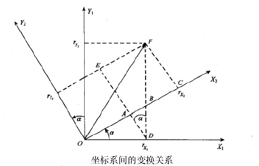
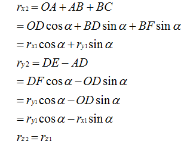
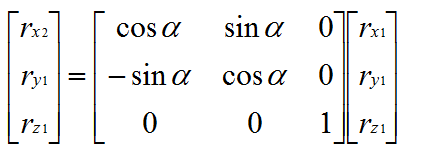
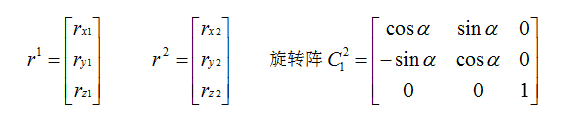
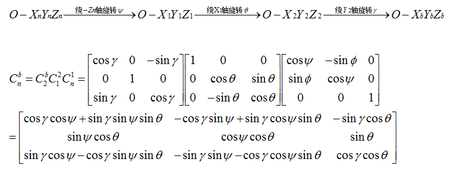
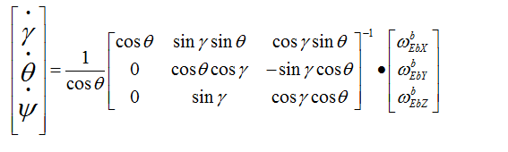
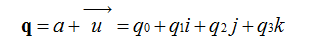
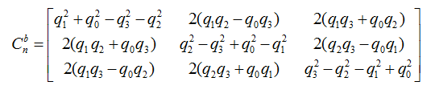

文中有很多word下編輯的公式尚未加入，需要繼續完善
使用MPU6050硬件DMP解算姿態是非常簡單的，下面介紹由三軸陀螺儀和加速度計的值來使用四元數軟件解算姿態的方法。
我們先來看看如何用歐拉角描述一次平面旋轉(座標變換)：

設座標系繞旋轉α角後得到座標系,在空間中有一個矢量在座標系中的投影為,在內的投影為由於旋轉繞進行，所以Z座標未變，即有。

轉換成矩陣形式表示為：

整理一下：

所以從旋轉到可以寫成
上面僅僅是繞一根軸的旋轉，如果三維空間中的歐拉角旋轉要轉三次:

上面得到了一個表示旋轉的方向餘弦矩陣。
不過要想用歐拉角解算姿態，其實我們套用歐拉角微分方程就行了：

上式中左側,,是本次更新後的歐拉角,對應row,pit,yaw。右側，是上個週期測算出來的角度，，，三個角速度由直接安裝在四軸飛行器的三軸陀螺儀在這個週期轉動的角度，單位為弧度，計算間隔時T陀螺角速度，比如0.02秒0.01弧度/秒=0.0002弧度。間因此求解這個微分方程就能解算出當前的歐拉角。
前面介紹了什麼是歐拉角，而且歐拉角微分方程解算姿態關係簡單明瞭，概念直觀容易理解，那麼我們為什麼不用歐拉角來表示旋轉而要引入四元數呢？
一方面是因為歐拉角微分方程中包含了大量的三角運算，這給實時解算帶來了一定的困難。而且當俯仰角為90度時方程式會出現神奇的“GimbalLock”。所以歐拉角方法只適用於水平姿態變化不大的情況，而不適用於全姿態飛行器的姿態確定。
四元數法只求解四個未知量的線性微分方程組，計算量小，易於操作，是比較實用的工程方法。
我們知道在平面(x,y)中的旋轉可以用複數來表示，同樣的三維中的旋轉可以用單位四元數來描述。我們來定義一個四元數：

我們可以把它寫成,其中,。那麼是矢量，表示三維空間中的旋轉軸。w是標量，表示旋轉角度。那麼就是繞軸旋轉w度，所以一個四元數可以表示一個完整的旋轉。只有單位四元數才可以表示旋轉，至於為什麼，因為這就是四元數表示旋轉的約束條件。
而剛才用歐拉角描述的方向餘弦矩陣用四元數描述則為：

所以在軟件解算中，我們要首先把加速度計採集到的值(三維向量)轉化為單位向量,即向量除以模，傳入參數是陀螺儀x,y,z值和加速度計x,y,z值：
void IMUupdate(float gx, float gy, float gz, float ax, float ay, float az) {
float norm;
float vx, vy, vz;
float ex, ey, ez;
norm = sqrt(ax*ax + ay*ay + az*az);
ax = ax / norm;
ay = ay / norm;
az = az / norm;
下面把四元數換算成方向餘弦中的第三行的三個元素。剛好vx,vy,vz 其實就是上一次的歐拉角（四元數）的機體座標參考系換算出來的重力的單位向量。
// estimated direction of gravity
vx = 2*(q1*q3 - q0*q2);
vy = 2*(q0*q1 + q2*q3);
vz = q0*q0 - q1*q1 - q2*q2 + q3*q3;
axyz是機體座標參照系上，加速度計測出來的重力向量，也就是實際測出來的重力向量。
axyz是測量得到的重力向量，vxyz是陀螺積分後的姿態來推算出的重力向量，它們都是機體座標參照系上的重力向量。
那它們之間的誤差向量，就是陀螺積分後的姿態和加計測出來的姿態之間的誤差。
向量間的誤差，可以用向量叉積（也叫向量外積、叉乘）來表示，exyz就是兩個重力向量的叉積。
這個叉積向量仍舊是位於機體座標系上的，而陀螺積分誤差也是在機體座標系，而且叉積的大小與陀螺積分誤差成正比，正好拿來糾正陀螺。（你可以自己拿東西想象一下）由於陀螺是對機體直接積分，所以對陀螺的糾正量會直接體現在對機體座標系的糾正。
// integral error scaled integral gain
exInt = exInt + ex*Ki;
eyInt = eyInt + ey*Ki;
ezInt = ezInt + ez*Ki;
用叉積誤差來做PI修正陀螺零偏
// integral error scaled integral gain
exInt = exInt + ex*Ki;
eyInt = eyInt + ey*Ki;
ezInt = ezInt + ez*Ki;
// adjusted gyroscope measurements
gx = gx + Kp*ex + exInt;
gy = gy + Kp*ey + eyInt;
gz = gz + Kp*ez + ezInt;
四元數微分方程，其中T為測量週期，為陀螺儀角速度，以下都是已知量，這裡使用了一階龍哥庫塔求解四元數微分方程：
// integrate quaternion rate and normalise
q0 = q0 + (-q1*gx - q2*gy - q3*gz)*halfT;
q1 = q1 + (q0*gx + q2*gz - q3*gy)*halfT;
q2 = q2 + (q0*gy - q1*gz + q3*gx)*halfT;
q3 = q3 + (q0*gz + q1*gy - q2*gx)*halfT;
最後根據四元數方向餘弦陣和歐拉角的轉換關係，把四元數轉換成歐拉角：
所以有：
Q_ANGLE.Yaw = atan2(2 * q1 * q2 + 2 * q0 * q3, -2 * q2*q2 - 2 * q3* q3 + 1)* 57.3; // yaw
Q_ANGLE.Y = asin(-2 * q1 * q3 + 2 * q0* q2)* 57.3; // pitch
Q_ANGLE.X = atan2(2 * q2 * q3 + 2 * q0 * q1, -2 * q1 * q1 - 2 * q2* q2 + 1)* 57.3; // roll